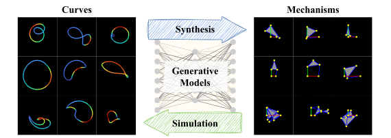
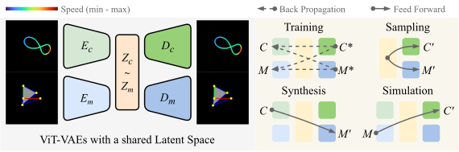
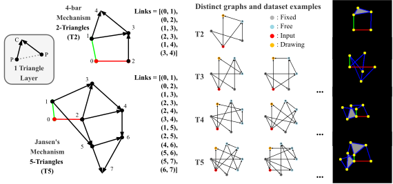
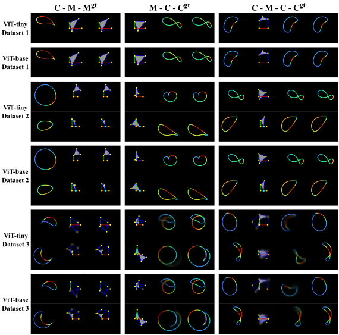

GenMech/
├── model/ # Core model components
│ ├── dataset.py # Dataset and data loading utilities
│ ├── loss.py # Loss functions for VAE training
│ ├── VAE_CNN.py # CNN-based VAE implementation
│ ├── VAE_VIT.py # Vision Transformer VAE implementation
│ ├── VIT_decoder_timm.py # ViT decoder using timm
│ └── validation.py # Validation utilities
├── test/ # Evaluation and testing scripts
│ ├── eval_test.py # Model evaluation and testing
│ └── eval_plot.py # Results visualization and plotting
├── mechanism/ # Dataset generation pipeline
├── train.py # Main training script
└── requirements.txt # Python dependencies
Abstract

In this paper, we formulate the problem of kinematic synthesis for planar linkages as a cross-domain image generation task. We develop a planar linkages dataset using RGB image representations, covering a range of mechanisms: from simple types such as crank-rocker and crank-slider to more complex eight-bar linkages like Jansen's mechanism. A shared-latent variational autoencoder (VAE) is employed to explore the potential of image generative models for synthesizing unseen motion curves and simulating novel kinematics. By encoding the drawing speed of trajectory points as color gradients, the same architecture also supports kinematic synthesis conditional on both trajectory shape and velocity profiles. We validate our method on three datasets of increasing complexity: a standard four-bar linkage set, a mixed set of four-bar and crank-slider mechanisms, and a complex set including multi-bar mechanisms. Preliminary results demonstrate the effectiveness of image-based representations for generative mechanical design, showing that mechanisms with revolute and prismatic joints, and potentially cams and gears, can be represented and synthesized within a unified image generation framework.
Overview

Overview of our shared-latent VAE framework for cross-domain kinematic synthesis and simulation. Curve and mechanism images (C, M) are encoded into latent embeddings (Zc , Zm), which are aligned in a shared latent space. During training, both reconstruction (C, M) and cross-domain prediction (Cm, Mc) are supervised via back-propagation. At inference time, the model enables synthesis (from C to M') and simulation (from M to C') through feed-forward decoding. Following MAE, we adopt an asymmetric ViT encoder-decoder design.
Dataset

Examples of dataset construction. Left: Example mechanisms (4-bar mechanism and Jansen’s linkage) built with 2 and 5 triangle layers, with their corresponding sequences of link connections. Right: For each complexity level (T2–T5), two representative graphs from different isomorphism classes are shown, along with rendered mechanism examples from the dataset.
Results

Qualitative results. C-M-Mgt: curve to predicted mechanism, compared to ground-truth mechanism. M-C-Cgt: mechanism to predicted curve, compared to ground-truth curve. C-M-C-Cgt: curve-to-mechanism-to-curve, compared to ground-truth curve. Rows show ViT-tiny and ViT-base models on three datasets.

Project Structure
Quick Start
1. Clone the Repository
git clone https://github.com/jl6017/GenMech.git
cd GenMech
2. Setup Environment
# Create and activate conda environment
conda create -n genmech python=3.11
conda activate genmech
# Install PyTorch with CUDA support
conda install pytorch torchvision torchaudio pytorch-cuda=12.4 -c pytorch -c nvidia
# Install remaining dependencies
pip install -r requirements.txt
3. Start Training
# Run training with default parameters
python train.py
# Run evaluation
python test/eval_test.py
# Generate plots
python test/eval_plot.py
Recommended Env
- Python 3.11
- PyTorch 2.0+
- CUDA 12.4+ (for GPU acceleration)